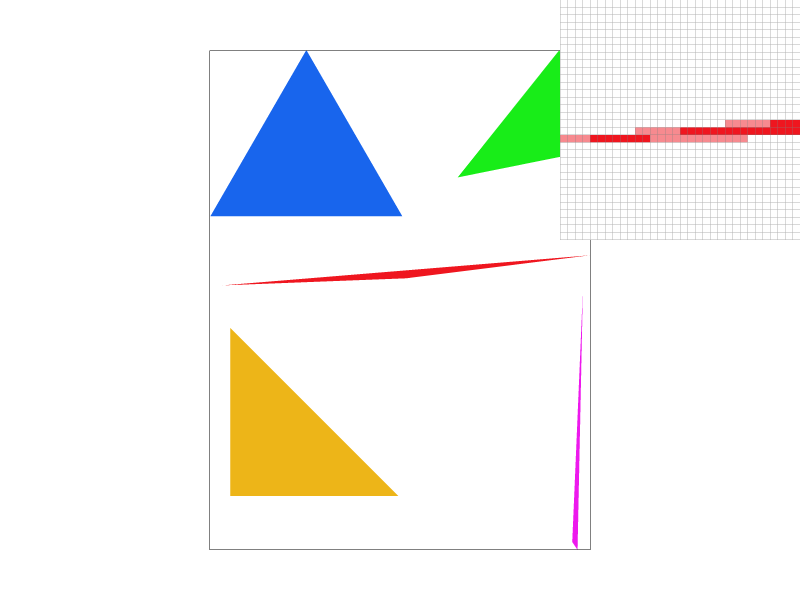
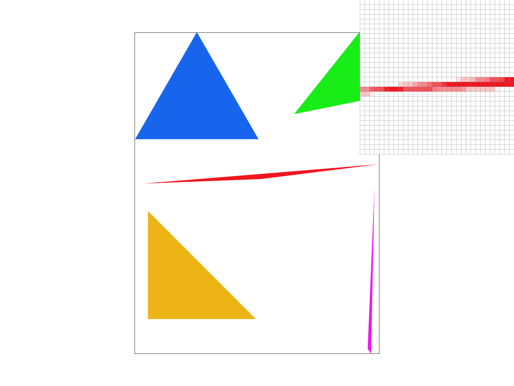
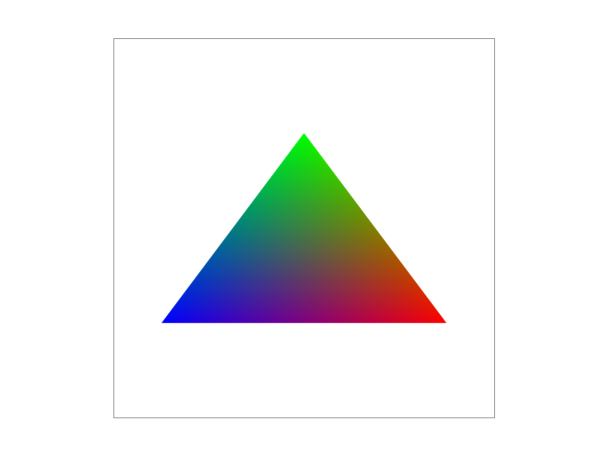
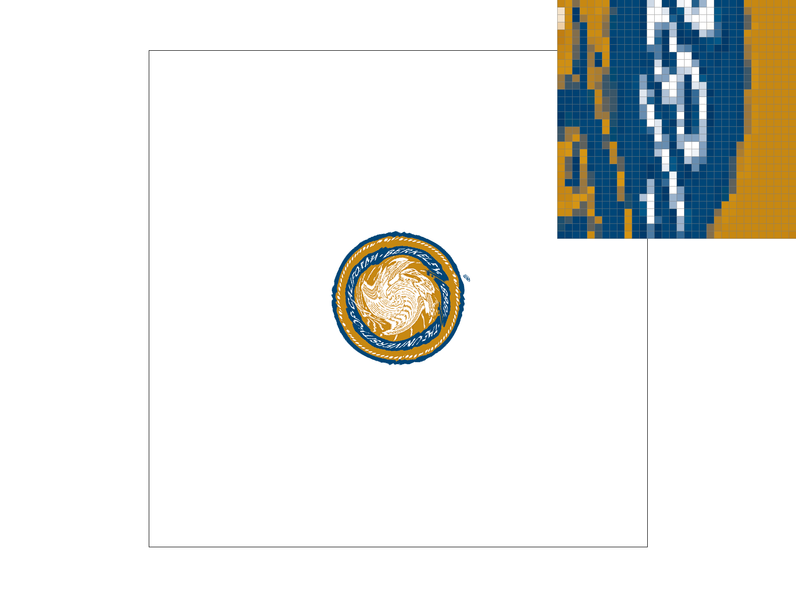
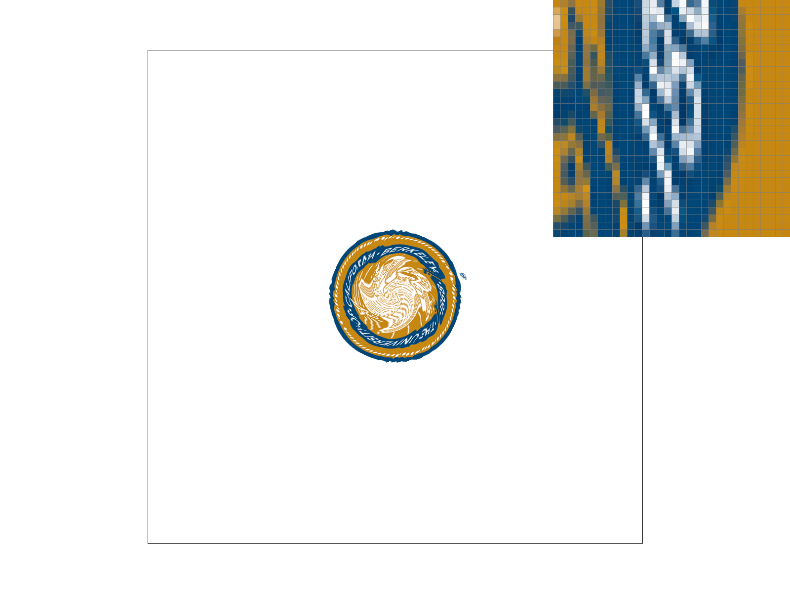
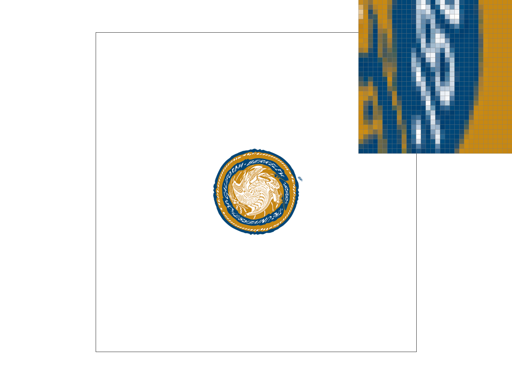
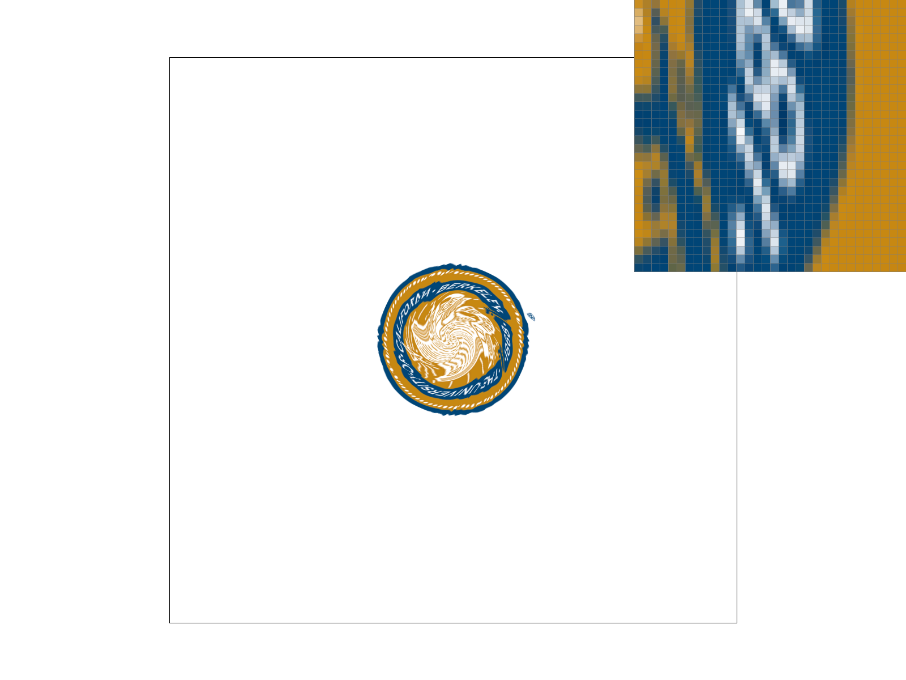
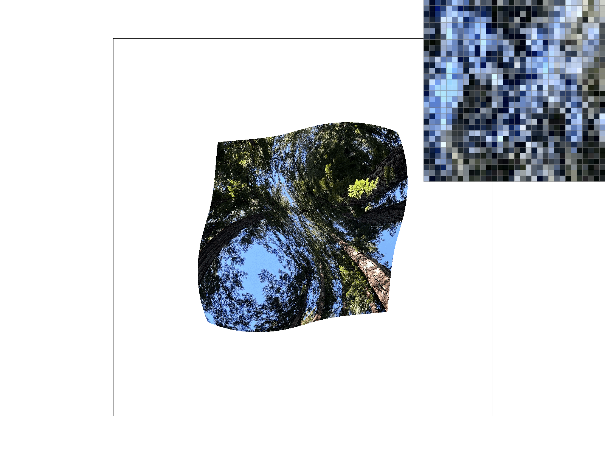
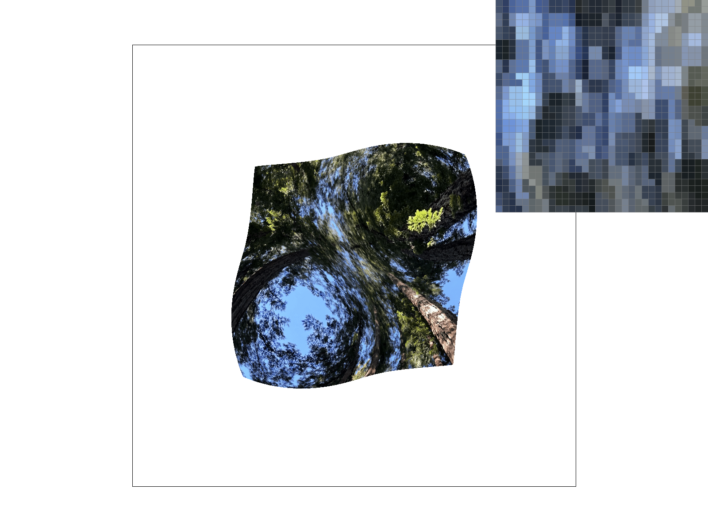
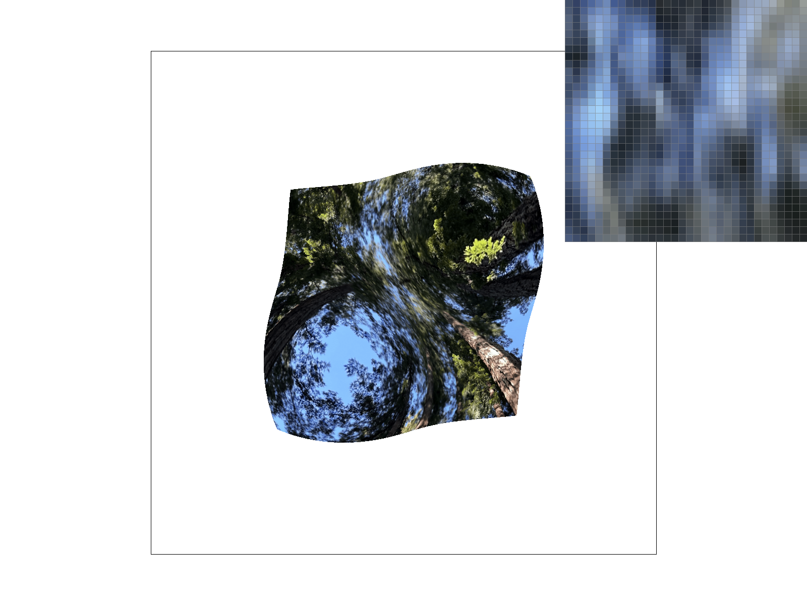

Overview
In this project, I implemented features relating to the rasterization of triangles, transforms, and antialiasing by method of supersampling. I worked on drawing simple triangles, triangles with interpolated colors, and triangles with textures! Overall, completing this project gave me good insight into the fundamentals of computer graphics and how a 2D scene may be drawn onto the screen.
Section I: Rasterization
Part 1: Rasterizing single-color triangles
Rasterizing triangles (in the way that I went about implementing it) involves getting the bounding box of the
triangle, and for each pixel in that bounding box, using three line tests described in lecture to check if the
sample point for that pixel (+0.5 for each x and y coordinate so that it is in the middle of the pixel) is inside
the bounds of the triangle. Each individual line test checks if the pixel is on the correct side of the line to be
inside the triangle. We then fill the pixel at that location if the pixel is properly in the triangle.
My algorithm is naturally no worse than one that checks each sample in the bounding box of the triangle since that
is exactly what I do.
Part 2: Antialiasing triangles
For supersampling, I utilized a sample buffer which scales with the sample rate, meaning that as the sample rate increases, the sample buffer will be resized accordingly. To support this, I change fill_pixel so that it fills in the respective samples that will be used for the given pixel. For triangles, which are supersampled, I make some edits to the algorithm I had in part 1. I multiply the given triangle coordinate by the sample_dim (sqrt of the sample rate) to get the correct sample buffer coordinate. I then use the same line tests as before, but this time I check if the sample rather than the pixel is inside the triangle. If it is, I edit the sample_buffer with the given color. In resolve_to_framebuffer, for each pixel in the framebuffer, I average the samples in the sample buffer that correspond to that pixel. This gives me the correct antialiased pixel color. Supersampling is useful because it improves image quality by reducing the jaggedness of the edges of shapes. It does this by sampling the color of the pixel multiple times, and then averaging the results to get a smoother color.
|
|

|
|

|
|
Part 3: Transforms
Section II: Sampling
Part 4: Barycentric coordinates
Barycentric coordinates in the context of 2D triangles is where a point can be expressed by reference to the vertices of the triangle which add up to 1. This is useful because it allows us to interpolate values across the triangle. For example, if we have a triangle with vertices (0, 0), (1, 0), and (1, 1), and we want to interpolate the color of the triangle, we can use barycentric coordinates to interpolate the color of the triangle at any given point. Specifically, if we had to calculate the barycentric coordinates of the point (0.75, 0.5), we would see that the barycentric coordinates are (0.25, 0.25, 0.5). This shows how we can represent this point as 0.25 * (0, 0) + 0.25 * (1, 0) + 0.5 * (1, 1). We can further use these barycentric coordinates as weights to interpolate the color of the triangle at that point. Below is an example of a triangle with red, green, and blue vertices with color interpolation along the triangle.
We can see that as a point gets closer to, for example, the left vertex which is colored blue, the color of the point will get progressively more blue. This is because the barycentric coordinates of the point will get progressively closer to (1, 0, 0), which is the barycentric coordinate of the blue vertex. This is also why the color of the point at the left vertex is completely blue.

Part 5: "Pixel sampling" for texture mapping
Pixel sampling is the act of sampling for the color of a pixel from a texture. In my implementation, I use much of the same code as I did for rasterizing color interpolated triangles, with the barycentric coordinates, but instead used those coordinates to interpolate the uv values of each vertex. I then use those uv values to sample the texture at the given point.
In nearest neighbor sampling, I round the uv values to the nearest point, and then sample the color at that point in the texture. This is very simple, but the results can be blocky because the color of the pixel is only based on the color of the nearest point in the texture rather than taking into account the surrounding points like in bilinear sampling.
In bilinear sampling, I take the four nearest points in the texture to the given uv value and interpolate the color of the pixel based on the colors of those four points. This gives a smoother/better looking result than nearest neighbor sampling.
Below we can see a textured berkeley logo with nearest sampling at 1 sample per pixel, nearest sampling at 16 samples per pixel, bilinear sampling at 1 sample per pixel, and bilinear sampling at 16 samples per pixel.
|

|

|
|

|

|
We can see that the difference between nearest and bilinear sampling at 1 sample per pixel is very apparent. The bilinear sampled texture looks a lot smoother than the nearest neighbor sampled texture. It, in fact, actually looks relatively similar to the nearest sampling at 16 samples per pixel in smoothness. Going from nearest to bilinear sampling at 16 samples per pixel, however, does not result in nearly as much visual improvement as it did at 1 sample per pixel. The large difference is most apparent at lower samples per pixel. This is because at 1 sample per pixel, nearest sampling is simply grabbing the closest texel in the texture, while bilinear sampling is actually interpolating the color of the pixel based on the colors of the surrounding texels. At 16 samples per pixel, however, the difference between nearest and bilinear sampling is much less apparent because the pixels are already being created from multiple sample points, and the difference between the colors of the nearest texels and the interpolated color is much less noticeable.
Part 6: "Level sampling" with mipmaps for texture mapping
Level sampling works by having multiple maps of the same texture but with differing levels of resolution called mipmaps. These are used to reduce aliasing especially when dealing with objects/textures far from the camera while not increasing the rendering time when compared to bilinear sampling. Mipmaps have levels, each of which has a height and width which is a factor of 2 smaller than the previous level. We determine the level of the mipmap getting the dx_uv and dy_uv, taking the max of the norms of those, then taking the log base 2 of that to get a float level value. We then either round to the nearest level or linearly sample between the two nearest levels.
-
Pixel sampling:
-
Nearest neighbor sampling
Speed: fast
Memory usage: N/A
Antialiasing power: none - Bilinear sampling
Speed: slow
Memory usage: N/A
Antialiasing power: reduce jaggies
-
Nearest neighbor sampling
-
Level sampling:
-
Level 0 sampling
Speed: fastest
Memory usage: 1 texture
Antialiasing power: none -
Nearest level sampling
Speed: fast
Memory usage: based on number of texture levels
Antialiasing power: better than nothing -
Linear level sampling
Speed: slow
Memory usage: based on number of texture levels
Antialiasing power: smooth
-
Level 0 sampling
-
Number of samples per pixel:
-
1 sample per pixel
Speed: fastest
Memory usage: N/A
Antialiasing power: none -
16 samples per pixel
Speed: slow
Memory usage: N/A
Antialiasing power: smooth
-
1 sample per pixel
|

|
|
|

|

|
Section III: Art Competition
If you are not participating in the optional art competition, don't worry about this section!
Part 7: Draw something interesting!
not participating :(